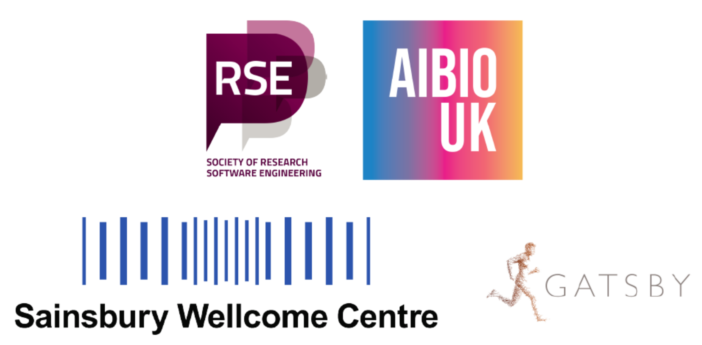

OSSS Extracellular Electrophysiology Course 2026
![]()
Preface
This is the course handbook for the Extracellular Electrophysiology course taught at the Neuroinformatics Unit Open Software Summer School (2026).
It walks through the theory and implementation of a full spike-sorting pipeline with SpikeInterface, from preprocessing and sorting through to analysis.
Get started
To work through the course, follow the setup instructions. You can complete the entire course in order, or start from any self-contained chapter. The best way to work through the course is to read through the coding chapters, and copy the relevant code (by hand!) to apply the steps in your own Python environment.
We provide small test datasets to use throughout the course (see course data), but you can equally apply the material to your own data.
You may also be interested in the glossary, which defines the key terms used throughout the course.
Schedule
The course will start on Monday 24th August, 2026.
| Monday | Tuesday | Wednesday | Thursday | Friday | |
|---|---|---|---|---|---|
| 10am-1pm | Introduction and pipeline overview | Preprocessing | Visualization and Curation | Coding with Git + Collaboration day intro | Collaboration day |
| 1pm-2pm | Lunch | Lunch | Lunch | Lunch | Lunch |
| 2pm-5pm | Symposium | Spike sorting and UnitMatch | Analysis (Pynapple + Probe track reconstruction) | Collaboration day | Collaboration day |
There will be 15 minute coffee/snack breaks in the middle of each session.
Funding and acknowledgements
The Open Software Summer School is funded by the Sainsbury Wellcome Centre, the Society for Research Software Engineering and AIBIO-UK.
We thank the Sainsbury Wellcome Centre and the Gatsby Computational Neuroscience Unit for providing facilities for the workshops. We are also grateful to Niko Sirmpilatze for his advice, with the infrastructure for this course based on Animals in Motion.
